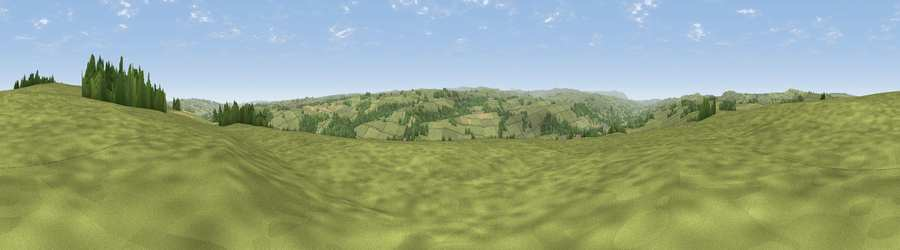

Viewpoint near Haydon Bridge
#14320 in England · top 34% of its area beats it · near Haydon BridgeWhere it is
The exact computed spot (NY 83875 65975). Click the marker for map links.
The view, rendered

A 360° render of this exact spot computed from the terrain model, tree cover and land cover — summer colours, afternoon light, calibrated against photographs of famous viewpoints. Real trees, hedges and buildings will differ in detail.
The panorama
Grey silhouette: terrain skyline in each direction (720 bearings, Earth curvature and refraction included). Dashed green: skyline with trees (+15 m) and buildings (+8 m) as obstacles. Blue strip: how far the ground is visible on each bearing.
Where the view opens
Wedge length = distance to the farthest visible ground on that bearing (vegetation-aware). Rings at 10, 25 and 50 km.
What fills the view
89% grassland · 9% woodland · 2% cropland
Angular shares of the visible panorama (visual magnitude), not map area. Landscape diversity 0.18 (0–1 Shannon).
Key numbers
More beautiful places nearby
The staircase of upgrades: each row has a higher view potential than everything closer. Driving times are estimates from straight-line distance, calibrated against real road routing — check an actual route before setting out.
| Place | Direction | Drive | Score |
|---|---|---|---|
| Viewpoint near Haydon Bridge | NNE · 1 km | ~3 min | 61.5 |
| Viewpoint near Bardon Mill | NW · 6 km | ~12 min | 71.0 |
| Viewpoint near Fourstones | ENE · 7 km | ~14 min | 71.4 |
| Viewpoint near West Woodburn | NNE · 20 km | ~34 min | 73.4 |
| Viewpoint near Allenheads | S · 21 km | ~36 min | 74.6 |
| Grey Nag | SW · 25 km | ~41 min | 75.7 |
| Viewpoint near Castle Carrock | WSW · 28 km | ~44 min | 76.9 |
| Viewpoint near Bewcastle | WNW · 28 km | ~45 min | 78.9 |
54.98810, -2.25353 · source: screening · position refined by local search. Computed location — check access rights before visiting.